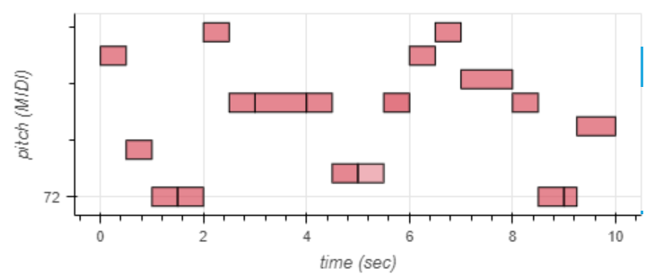
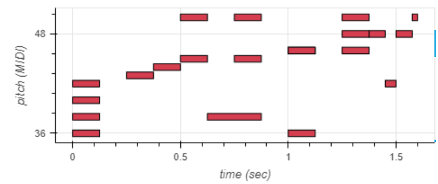
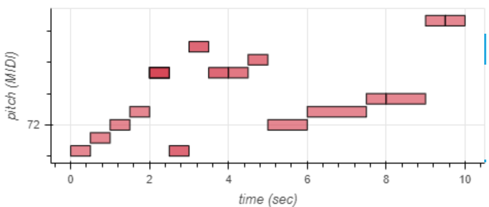
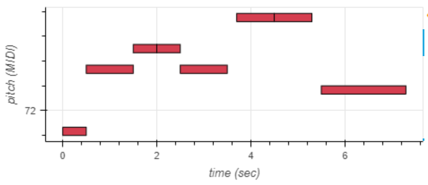

Laboratório 9 – MIDI e Respostas Impulsivas
Resumo
Descrição:
Sobre a atividade:
Esta prática sobre MIDI e Respostas Impulsivas tem como objetivos:
- Tocar notas e gerar músicas simples
- Gerar arquivos MIDI
- Reproduzir arquivos MIDI
- Simular a reprodução em salas com Respostas Impulsivas diversas
Tocar notas e gerar músicas simples
Músicas - Integrantes
Abaixo, para cada integrante do grupo
Beatriz
# Música Beatriz beatriz = music_pb2.NoteSequence() # VozesdaMinhaCabeça beatriz.notes.add(pitch=78, start_time=0.0, end_time=0.5, velocity=80) beatriz.notes.add(pitch=74, start_time=0.5, end_time=1.0, velocity=80) beatriz.notes.add(pitch=72, start_time=1.0, end_time=1.5, velocity=80) beatriz.notes.add(pitch=72, start_time=1.5, end_time=2.0, velocity=80) beatriz.notes.add(pitch=79, start_time=2.0, end_time=2.5, velocity=80) beatriz.notes.add(pitch=76, start_time=2.5, end_time=3.0, velocity=80) beatriz.notes.add(pitch=76, start_time=3.0, end_time=4.0, velocity=80) beatriz.notes.add(pitch=76, start_time=4.0, end_time=4.5, velocity=80) beatriz.notes.add(pitch=73, start_time=4.5, end_time=5.0, velocity=80) beatriz.notes.add(pitch=73, start_time=5.0, end_time=5.5, velocity=50) beatriz.notes.add(pitch=76, start_time=5.5, end_time=6.0, velocity=90) beatriz.notes.add(pitch=78, start_time=6.0, end_time=6.5, velocity=80) beatriz.notes.add(pitch=79, start_time=6.5, end_time=7.0, velocity=80) beatriz.notes.add(pitch=77, start_time=7.0, end_time=8.0, velocity=80) beatriz.notes.add(pitch=76, start_time=8.0, end_time=8.5, velocity=80) beatriz.notes.add(pitch=72, start_time=8.5, end_time=9.0, velocity=80) beatriz.notes.add(pitch=72, start_time=9.0, end_time=9.25, velocity=80) beatriz.notes.add(pitch=75, start_time=9.25, end_time=10.0, velocity=80) beatriz.total_time = 10.0 beatriz.tempos.add(qpm=60); # This is a colab utility method that visualizes a NoteSequence. note_seq.plot_sequence(beatriz) # This is a colab utility method that plays a NoteSequence. note_seq.play_sequence(beatriz,synth=note_seq.fluidsynth)
plot
Thais
# Música Thais thais = music_pb2.NoteSequence() thais.notes.add(pitch=40, start_time=0, end_time=0.125, is_drum=True, instrument=10, velocity=80) thais.notes.add(pitch=36, start_time=0, end_time=0.125, is_drum=True, instrument=10, velocity=80) thais.notes.add(pitch=38, start_time=0, end_time=0.125, is_drum=True, instrument=10, velocity=80) thais.notes.add(pitch=42, start_time=0, end_time=0.125, is_drum=True, instrument=10, velocity=80) thais.notes.add(pitch=43, start_time=0.25, end_time=0.375, is_drum=True, instrument=10, velocity=80) thais.notes.add(pitch=44, start_time=0.375, end_time=0.5, is_drum=True, instrument=10, velocity=80) thais.notes.add(pitch=45, start_time=0.5, end_time=0.625, is_drum=True, instrument=10, velocity=80) thais.notes.add(pitch=50, start_time=0.5, end_time=0.625, is_drum=True, instrument=10, velocity=80) thais.notes.add(pitch=38, start_time=0.625, end_time=0.875, is_drum=True, instrument=10, velocity=80) thais.notes.add(pitch=50, start_time=0.75, end_time=0.875, is_drum=True, instrument=10, velocity=80) thais.notes.add(pitch=45, start_time=0.75, end_time=0.875, is_drum=True, instrument=10, velocity=80) thais.notes.add(pitch=36, start_time=1, end_time=1.125, is_drum=True, instrument=10, velocity=80) thais.notes.add(pitch=46, start_time=1, end_time=1.125, is_drum=True, instrument=10, velocity=80) thais.notes.add(pitch=46, start_time=1, end_time=1.125, is_drum=True, instrument=10, velocity=80) thais.notes.add(pitch=46, start_time=1.25, end_time=1.375, is_drum=True, instrument=10, velocity=80) thais.notes.add(pitch=48, start_time=1.25, end_time=1.375, is_drum=True, instrument=10, velocity=80) thais.notes.add(pitch=50, start_time=1.25, end_time=1.375, is_drum=True, instrument=10, velocity=80) thais.notes.add(pitch=48, start_time=1.375, end_time=1.450, is_drum=True, instrument=10, velocity=80) thais.notes.add(pitch=42, start_time=1.450, end_time=1.50, is_drum=True, instrument=10, velocity=80) thais.notes.add(pitch=48, start_time=1.50, end_time=1.575, is_drum=True, instrument=10, velocity=80) thais.notes.add(pitch=50, start_time=1.575, end_time=1.6, is_drum=True, instrument=10, velocity=80) thais.total_time = 1.6 thais.tempos.add(qpm=80) # This is a colab utility method that visualizes a NoteSequence. note_seq.plot_sequence(thais)
plot
Vanessa
# Música Vanessa vanessa = music_pb2.NoteSequence() vanessa.notes.add(pitch=70, start_time=0.0, end_time=0.5, velocity=80) vanessa.notes.add(pitch=71, start_time=0.5, end_time=1.0, velocity=80) vanessa.notes.add(pitch=72, start_time=1.0, end_time=1.5, velocity=80) vanessa.notes.add(pitch=73, start_time=1.5, end_time=2.0, velocity=80) vanessa.notes.add(pitch=76, start_time=2.0, end_time=2.5, velocity=80) vanessa.notes.add(pitch=76, start_time=2.0, end_time=2.5, velocity=80) vanessa.notes.add(pitch=76, start_time=2.0, end_time=2.5, velocity=80) vanessa.notes.add(pitch=70, start_time=2.5, end_time=3.0, velocity=100) vanessa.notes.add(pitch=78, start_time=3.0, end_time=3.5, velocity=100) vanessa.notes.add(pitch=76, start_time=3.5, end_time=4.0, velocity=100) vanessa.notes.add(pitch=76, start_time=4.0, end_time=4.5, velocity=90) vanessa.notes.add(pitch=77, start_time=4.5, end_time=5.0, velocity=90) vanessa.notes.add(pitch=72, start_time=5.0, end_time=6.0, velocity=80) vanessa.notes.add(pitch=73, start_time=6.0, end_time=7.5, velocity=80) vanessa.notes.add(pitch=74, start_time=7.5, end_time=8.0, velocity=80) vanessa.notes.add(pitch=74, start_time=8.0, end_time=9.0, velocity=80) vanessa.notes.add(pitch=80, start_time=9.0, end_time=9.5, velocity=80) vanessa.notes.add(pitch=80, start_time=9.5, end_time=10.0, velocity=80) vanessa.total_time = 10.0 vanessa.tempos.add(qpm=60); # This is a colab utility method that visualizes a NoteSequence. note_seq.plot_sequence(vanessa) # This is a colab utility method that plays a NoteSequence. note_seq.play_sequence(vanessa,synth=note_seq.fluidsynth)
plot
William
# Música William william = music_pb2.NoteSequence() william.notes.add(pitch=70, start_time=0.0, end_time=0.5, velocity=80) william.notes.add(pitch=76, start_time=0.5, end_time=1.5, velocity=80) william.notes.add(pitch=78, start_time=1.5, end_time=2.0, velocity=80) william.notes.add(pitch=78, start_time=2.0, end_time=2.5, velocity=80) william.notes.add(pitch=76, start_time=2.5, end_time=3.5, velocity=80) william.notes.add(pitch=81, start_time=3.7, end_time=4.5, velocity=80) william.notes.add(pitch=81, start_time=4.5, end_time=5.3, velocity=80) william.notes.add(pitch=74, start_time=5.5, end_time=7.3, velocity=80) william.total_time = 7.5 william.tempos.add(qpm=60); # This is a colab utility method that visualizes a NoteSequence. note_seq.plot_sequence(william) # This is a colab utility method that plays a NoteSequence. note_seq.play_sequence(william,synth=note_seq.fluidsynth)
plot
Música criada para reproduzir em cada ambiente
Com diferentes tempos de reprodução, temos:.
# Música Criada musica = music_pb2.NoteSequence() musica.notes.add(pitch=70, start_time=0.0, end_time=0.5, velocity=80) musica.notes.add(pitch=76, start_time=0.5, end_time=1.5, velocity=80) musica.notes.add(pitch=78, start_time=1.5, end_time=2.0, velocity=80) musica.notes.add(pitch=78, start_time=2.0, end_time=2.5, velocity=80) musica.notes.add(pitch=76, start_time=2.5, end_time=3.5, velocity=80) musica.notes.add(pitch=81, start_time=3.7, end_time=4.5, velocity=80) musica.notes.add(pitch=81, start_time=4.5, end_time=5.3, velocity=80) musica.notes.add(pitch=74, start_time=5.5, end_time=7.3, velocity=80) musica.notes.add(pitch=70, start_time=7.3, end_time=8.0, velocity=80) musica.notes.add(pitch=71, start_time=8.0, end_time=8.5, velocity=80) musica.notes.add(pitch=72, start_time=8.5, end_time=9.5, velocity=80) musica.notes.add(pitch=73, start_time=9.5, end_time=10.0, velocity=80) musica.notes.add(pitch=76, start_time=10.0, end_time=10.5, velocity=80) musica.notes.add(pitch=76, start_time=10.5, end_time=11.0, velocity=80) musica.notes.add(pitch=76, start_time=11.0, end_time=11.5, velocity=80) musica.notes.add(pitch=70, start_time=11.5, end_time=12.0, velocity=100) musica.notes.add(pitch=78, start_time=12.0, end_time=12.5, velocity=100) musica.notes.add(pitch=76, start_time=12.5, end_time=13.0, velocity=100) musica.notes.add(pitch=76, start_time=13.0, end_time=13.5, velocity=90) musica.notes.add(pitch=77, start_time=13.5, end_time=14.0, velocity=90) musica.notes.add(pitch=72, start_time=14.0, end_time=14.5, velocity=80) musica.notes.add(pitch=73, start_time=14.5, end_time=15.0, velocity=80) musica.notes.add(pitch=74, start_time=15.0, end_time=15.5, velocity=80) musica.notes.add(pitch=74, start_time=15.5, end_time=16.0, velocity=80) musica.notes.add(pitch=80, start_time=16.0, end_time=16.5, velocity=80) musica.notes.add(pitch=80, start_time=16.5, end_time=17.0, velocity=80) musica.notes.add(pitch=78, start_time=17.0, end_time=17.5, velocity=80) musica.notes.add(pitch=74, start_time=17.5, end_time=18.0, velocity=80) musica.notes.add(pitch=72, start_time=18.0, end_time=18.5, velocity=80) musica.notes.add(pitch=72, start_time=18.5, end_time=20.0, velocity=80) musica.notes.add(pitch=79, start_time=20.0, end_time=20.5, velocity=80) musica.notes.add(pitch=76, start_time=20.5, end_time=21.0, velocity=80) musica.notes.add(pitch=76, start_time=21.0, end_time=21.5, velocity=80) musica.notes.add(pitch=76, start_time=21.5, end_time=22.0, velocity=80) musica.notes.add(pitch=73, start_time=22.0, end_time=22.5, velocity=80) musica.notes.add(pitch=73, start_time=22.5, end_time=23.0, velocity=50) musica.notes.add(pitch=76, start_time=23.0, end_time=23.5, velocity=90) musica.notes.add(pitch=78, start_time=23.5, end_time=24.0, velocity=80) musica.notes.add(pitch=79, start_time=24.0, end_time=24.5, velocity=80) musica.notes.add(pitch=77, start_time=24.5, end_time=25.0, velocity=80) musica.notes.add(pitch=76, start_time=25.0, end_time=25.5, velocity=80) musica.notes.add(pitch=72, start_time=25.5, end_time=26.0, velocity=80) musica.notes.add(pitch=72, start_time=26.5, end_time=27.0, velocity=80) musica.notes.add(pitch=75, start_time=27.0, end_time=28.0, velocity=80) musica.total_time = 29.0 musica.tempos.add(qpm=60); # This is a colab utility method that visualizes a NoteSequence. note_seq.plot_sequence(musica) # This is a colab utility method that plays a NoteSequence. note_seq.play_sequence(musica,synth=note_seq.fluidsynth)
Gráfico

Conclusões

Capturar uma imagem é libertar vidas, lembranças e saudades!
Rosival Evangelista
Copyright © MACode ID. All rights reserved